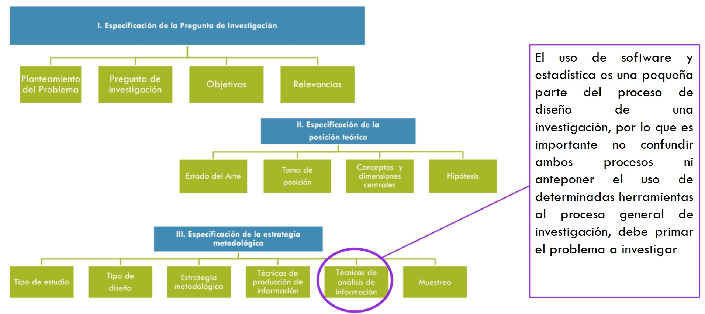
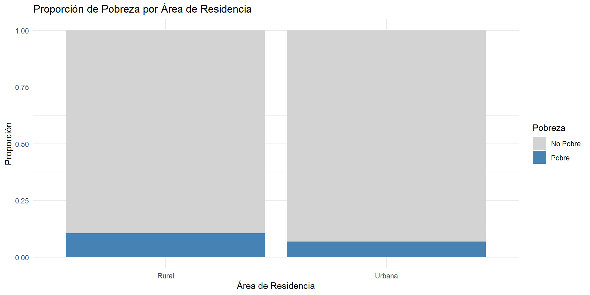

Clase 1: Introducción al Curso Análisis Avanzado de Datos II
2025-10-03
Presentación
Este curso profundiza en las técnicas de análisis multivariante, permitiendo examinar de manera integrada la interacción de múltiples factores en el estudio de problemas sociales. Se enfatiza la comprensión de los procedimientos y la interpretación rigurosa de los resultados, con un enfoque aplicado mediante el uso de herramientas computacionales, principalmente R y RStudio.
El curso prioriza la aplicación práctica de los métodos estadísticos sin requerir una profundización en sus fundamentos matemáticos. Al finalizar, el estudiante será capaz de analizar datos primarios y secundarios, identificar la técnica estadística adecuada según el contexto y generar informes que comuniquen de manera efectiva los hallazgos obtenidos.
Resultados de Aprendizaje
Resultado general: Desarrollar la capacidad de aplicar técnicas de estadística multivariante descriptiva e inferencial para analizar datos, formular hipótesis y construir modelos explicativos en investigaciones sociales, asegurando la correcta interpretación y comunicación de los resultados.
Resultados Específicos
- Gestionar bases de datos complejas, asegurando su preparación y estructuración para el análisis.
- Definir y estructurar problemas de análisis multivariante, formulando preguntas de investigación con sustento metodológico.
- Seleccionar técnicas estadísticas adecuadas, justificando su aplicación en función del tipo de datos y los objetivos del análisis.
- Utilizar herramientas computacionales especializadas, aplicando modelos en R y RStudio de manera efectiva.
- Interpretar de forma rigurosa los resultados del análisis, identificando sus alcances y limitaciones.
- Redactar informes técnicos y académicos, comunicando los hallazgos de manera clara, estructurada y fundamentada.
Contenidos
1. Gestión de Datos con R
- Introducción a la manipulación de datos con tidyverse.
- Cálculo e interpretación de estadísticos descriptivos.
- Visualización de información con ggplot2.
- Elementos introductorios de investigación reproducible.
2. Introducción al uso de muestras complejas en R
- Conceptos fundamentales de muestreo complejo.
- Diseño de encuestas y aplicación de ponderaciones.
- Inferencia estadística en muestras complejas.
- Manejo de encuestas con los paquetes survey y svyr.
Contenidos
3. Introducción a los Modelos Multivariados
- Rol de los modelos en las ciencias sociales.
- Diferencias entre enfoques exploratorios y confirmatorios.
- Repaso de conceptos estadísticos clave: covarianza, correlación e inferencia.
- Supuestos del análisis multivariante y su importancia.
4. Repaso de modelos de regresión
- Relevancia del control estadístico.
- Regresión lineal múltiple.
- Regresión logística binaria.
Contenidos
5. Análisis Factorial Exploratorio
- Aplicación en la investigación sociológica.
- Comparación entre análisis de componentes principales y factor común; supuestos del método.
- Métodos de extracción de factores, criterios de selección y técnicas de rotación.
- Interpretación de la matriz factorial y evaluación del ajuste. Cálculo de puntuaciones factoriales.
- Introducción al paquete psych.
Contenidos
6. Análisis Factorial Confirmatorio
- Diferencias principales con el análisis factorial exploratorio.
- Especificación e identificación del modelo, estimación de parámetros.
- Evaluación del ajuste, reespecificación y validez (convergente y discriminante).
- Ejemplo práctico de análisis confirmatorio.
- Introducción al paquete lavaan.
Contenidos
7. Análisis de Sendero
- Fundamentos y aplicación en ciencias sociales.
- Especificación del modelo de sendero y verificación de supuestos.
- Evaluación de la medición y capacidad confirmatoria.
- Ejemplo aplicado en investigación sociológica.
8. Modelos de Ecuaciones Estructurales
- Definición y aplicación de los SEM en ciencias sociales.
- Estructura del modelo y supuestos de la técnica.
- Estimación y evaluación del modelo, introducción de modificaciones.
- Ejemplos de modelamiento de ecuaciones estructurales.
Bibliografía
| Ítem | Título | Autor | Año |
|---|---|---|---|
| 1 | Analisis Estadistico Multivariante - Un Enfoque Teorico y Practico |
De La Garza Garcia, Jorge |
2013 |
| 2 | Análisis de datos multivariantes. | Peña, Daniel | 2002 |
| 3 | Análisis Multivariado Aplicado | Uriel Y Aldas | 2005, 1ª Edición |
| 4 | Análisis Multivariante para las Ciencias Sociales | Levi J.P. y Varela J. |
2001 |
| 5 | Modelos de Ecuaciones Estructurales Cuadernos de estadística | Batista, J.M. y Coenders G. | 2012 |
| 6 | Introducción al Análisis de Regresión Lineal | Montgomery, Peck y Vining | 2006 |
| 7 | El análisis factorial como técnica de investigación en Psicología | Ferrando, P. J., & Anguiano-Carrasco, C. | 2010 |
Bibliografía
| Ítem | Título | Autor | Año |
|---|---|---|---|
| 8 | Análisis factorial confirmatorio. Su utilidad en la validación de cuestionarios relacionados con la salud. | Batista-Foguet, J.M., Coenders, G., & Alonso, J. | 2004 |
| 9 | El Path Analysis: conceptos básicos y ejemplos de aplicación. | Pérez, E., Medrano, L. A., & Rosas, J. S | 2013 |
| 10 | Modelos de ecuaciones estructurales | Ruiz, M.A | 2010 |
| 11 | RStudio para Estadística Descriptiva en Ciencias Sociales. Manual de apoyo docente para la asignatura Estadística Descriptiva | Boccardo, G. y Ruiz, F. | 2019 |
| 12 | R para Ciencia de Datos https://es.r4ds.hadley.nz/index.html | Wickham, H | 2019 |
| 13 | Exploring complex survey data analysis using R: A tidy introduction with {srvyr} and {survey} | Zimmer, S. A | 2024 |
Evaluaciones
| Evaluación | Fechas | Porcentaje |
|---|---|---|
| Tareas uso de R | 24 de marzo 28 de abril 2 de junio 16 de junio |
30% |
| Prueba | 19 de mayo | 35% |
| Trabajo final | 1 de julio | 35% |
Ayudantías
El curso tiene dos ayudantes:
Fernanda Hurtado fernanda.hurtado@mail.udp.cl
Francisca Hernández francisca.hernandez_c@mail.udp.cl
Están disponibles para responder las dudas que puedan tener a lo largo del curso, tanto estadísticas como de uso de software.
Habrá sesiones de ayudantía cada 2 semanas aproximadamente, centradas en la aplicación de las técnicas que revisaremos en R.
También les acompañarán en la realización de tareas y trabajos de investigación.
Página del Curso
Delegado de Curso
Las comunicaciones del curso con el equipo docente para temas colectivos deberán gestionarse de manera centralizada mediante un delegado, especialmente considerando que hay alumnos de distintas generaciones.
Esto es particularmente relevante para solicitudes respecto a evaluaciones.
Objetivos de la Sesión
Reflexionar sobre el proceso de análisis de datos (y uso de software).
Introducir el concepto de tidy data y el tidyverse como herramienta de trabajo.
¿Donde se sitúa la estadística en el proceso de investigación?

¿Dónde se Sitúa la Estadística en la Investigación?
- La estadística es fundamental en todo el proceso de investigación en ciencias sociales.
- No se limita al análisis de datos, sino que guía cada etapa:
- Diseño de Investigación: Ayuda a definir la muestra, variables relevantes y métodos de recolección.
- Recolección de Datos: Asegura la calidad y representatividad de la información.
- Análisis de Datos: Permite extraer patrones, relaciones y conclusiones significativas.
- Interpretación de Resultados: Facilita la comprensión de los hallazgos en el contexto teórico.
- Comunicación de Resultados: Proporciona herramientas para presentar la evidencia de manera clara y rigurosa.
- El software estadístico (como R) es esencial para aplicar estas técnicas de manera eficiente y reproducible.
Proceso de Análisis de Datos

Proceso de Análisis de Datos
La ciencia de datos, y el análisis estadístico, es un proceso iterativo que puede ser resumido en los siguientes pasos:
- Importar: Traer los datos a R desde diversas fuentes (archivos, bases de datos, APIs).
- Ordenar (Tidy): Estructurar los datos de manera consistente: cada variable en una columna, cada observación en una fila.
- Transformar: Modificar los datos para responder preguntas específicas: seleccionar observaciones, crear nuevas variables, calcular resúmenes.
- Visualizar: Explorar los datos gráficamente para descubrir patrones, tendencias y anomalías.
- Modelar: Construir modelos estadísticos para confirmar patrones y realizar predicciones.
- Comunicar: Presentar los resultados de manera efectiva a diferentes audiencias.
- Programar: Utilizar la programación como herramienta transversal para automatizar tareas y resolver problemas en cada etapa.
El Tidyverse: Un Ecosistema para la Ciencia de Datos en R
El tidyverse es una colección de paquetes de R diseñados para la ciencia de datos.
- Comparte una filosofía común y facilita el trabajo con datos de manera intuitiva y eficiente.
- El nombre “tidyverse” viene de “tidy data” (datos ordenados).
- Incluye paquetes esenciales como:
dplyr,ggplot2,tidyr,readr,purrr,stringr,forcats,lubridate.
Para instalar e iniciar el tidyverse:
- Muestra los paquetes principales cargados.
- Indica posibles conflictos de funciones con otros paquetes (se pueden manejar con
conflicted).
Datos Ordenados (Tidy Data): Una Introducción
Datos ordenados (tidy data) es una manera consistente de organizar los datos.
- Facilita el análisis y la manipulación de datos con las herramientas del tidyverse.
- Aunque requiere un trabajo inicial de organización, ahorra tiempo a largo plazo al simplificar el análisis.
- Las encuestas suelen venir en este formato.
Reglas de los Datos Ordenados
Para que un conjunto de datos sea considerado ordenado, debe cumplir con tres reglas fundamentales:
- Cada variable debe tener su propia columna.
- Cada observación debe tener su propia fila.
- Cada valor debe tener su propia celda.
##Datos Ordenados {.smaller background-color=“white”}

Ventajas de los Datos Ordenados
Trabajar con datos ordenados ofrece importantes ventajas:
- Consistencia: Facilita el aprendizaje y uso de herramientas del tidyverse, ya que están diseñadas para trabajar con este formato.
- Eficiencia en R: Permite aprovechar la naturaleza vectorizada de R, simplificando la manipulación y el análisis de datos.
- Mayor Claridad: Estructura intuitiva que facilita la comprensión de los datos y la identificación de variables y observaciones.
Al adoptar el formato tidy, optimizamos nuestro flujo de trabajo en R para el análisis de datos.
Proceso de Análisis de Datos
El sentido de cada una de estas etapas debe estar guiada por una pregunta de investigación. Sin una pregunta no podemos determinar que datos necesitamos, en que forma, dodne explorar y visualziar y que modelar y comunicar.
Tomemos un ejemplo simple: ¿Cómo se relaciona la pobreza y la ruralidad en Chile?
Importar Datos a R: Ejemplo con CASEN 2022
Para comenzar a trabajar con datos en R, el primer paso es importarlos.
Veamos un ejemplo práctico descargando y cargando la base de datos CASEN 2022:
library(haven)
temp <- tempfile() # Creamos un archivo temporal
download.file("https://observatorio.ministeriodesarrollosocial.gob.cl/storage/docs/casen/2022/Base%20de%20datos%20Casen%202022%20SPSS.sav.zip",temp) #descargamos los datos
casen <- haven::read_sav(unz(temp, "Base de datos Casen 2022 SPSS.sav")) #cargamos los datos
unlink(temp); remove(temp) #eliminamos el archivo temporaltempfile(): Crea un archivo temporal para guardar la descarga.download.file(): Descarga el archivo ZIP de la CASEN desde la URL.haven::read_sav(unz(...)): Lee el archivo.sav(SPSS) dentro del ZIP descargado, utilizando el paquetehaven.unlink(temp); remove(temp): Elimina el archivo temporal descargado para limpiar el
Ordenar (Tidy)
Seleccionamos las variables de interés para este ejemplo: folio (identificador), area (urbana/rural), y pobreza (categorías de pobreza). Usamos select() de dplyr para elegir las columnas y head() para mostrar las primeras filas.
# A tibble: 6 × 3
folio area pobreza
<dbl> <dbl+lbl> <dbl+lbl>
1 100090101 2 [Rural] 3 [No pobreza]
2 100090101 2 [Rural] 3 [No pobreza]
3 100090101 2 [Rural] 3 [No pobreza]
4 100090201 2 [Rural] 2 [Pobreza no extrema]
5 100090201 2 [Rural] 2 [Pobreza no extrema]
6 100090201 2 [Rural] 2 [Pobreza no extrema]Transformar
Creamos una nueva variable dicotómica llamada pobrezad (pobreza dicotómica). Usamos mutate() de dplyr y ifelse() para asignar valor 1 si la variable pobreza original está en las categorías 1 o 2 (pobre o pobre extremo), y 0 en caso contrario.
Visualizar
Visualizamos la relación entre el área de residencia (area) y la pobreza dicotómica (pobrezad) usando un gráfico de barras.
casen %>%
mutate(area_label = ifelse(area == 1, "Urbana", "Rural")) %>% # Etiquetas para el área
ggplot(aes(x = area_label, fill = factor(pobrezad))) +
geom_bar(position = "fill") + # Barras proporcionales
scale_fill_manual(values = c("lightgray", "steelblue"), labels = c("No Pobre", "Pobre"), name = "Pobreza") + # Colores y etiquetas
labs(title = "Proporción de Pobreza por Área de Residencia",
x = "Área de Residencia",
y = "Proporción") +
theme_minimal()
Modelar
Modelamos la probabilidad de ser pobre (pobrezad) en función del área de residencia (area) utilizando una regresión logística. Calculamos el Odds Ratio para interpretar el efecto del área rural en comparación con el área urbana.
modelo_logistico <- glm(pobrezad ~ area, data = casen, family = "binomial")
summary(modelo_logistico)
Call:
glm(formula = pobrezad ~ area, family = "binomial", data = casen)
Coefficients:
Estimate Std. Error z value Pr(>|z|)
(Intercept) -3.08006 0.02554 -120.61 <2e-16 ***
area 0.46586 0.01898 24.55 <2e-16 ***
---
Signif. codes: 0 '***' 0.001 '**' 0.01 '*' 0.05 '.' 0.1 ' ' 1
(Dispersion parameter for binomial family taken to be 1)
Null deviance: 108273 on 202230 degrees of freedom
Residual deviance: 107705 on 202229 degrees of freedom
AIC: 107709
Number of Fisher Scoring iterations: 5(Intercept) area
0.04595649 1.59338703 glm()ajusta un modelo lineal generalizado.family = "binomial"especifica la regresión logística.summary(modelo_logistico)muestra los resultados del modelo.exp(coef(modelo_logistico))calcula el Odds Ratio, exponenciando los coeficientes del modelo. El Odds Ratio paraarearepresenta el cambio multiplicativo en las odds de ser pobre al pasar del área urbana (referencia) al área rural.
Comunicar
La regresión logística revela una asociación significativa y positiva entre el área de residencia rural y la pobreza. Específicamente, las personas que residen en áreas rurales tienen odds de ser pobres 1.59 veces mayores que quienes viven en áreas urbanas (p < 2e-16).
Este resultado sugiere que el riesgo de pobreza es considerablemente mayor en zonas rurales de Chile, incluso en un modelo simple que solo considera el área de residencia. Este hallazgo destaca la necesidad de políticas públicas diferenciadas y focalizadas en áreas rurales para abordar eficazmente la problemática de la pobreza.